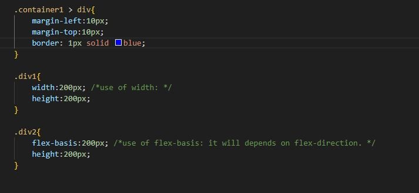
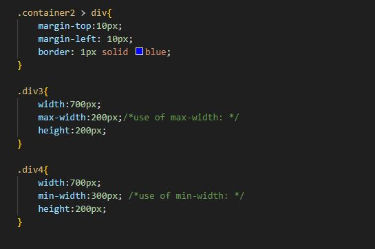

Flex Sizing
Flex shortcode
click here
.
Output:
Width and flex-basis:
Code:

Output:
Im using width:200px; for sizing.
Im using flex-basis:200px; for sizing.
max - width and min - width:
Code:

Output:
Im using width:700px and max-width:200px; for sizing.
Im using width:700px and min-width:300px; for sizing.